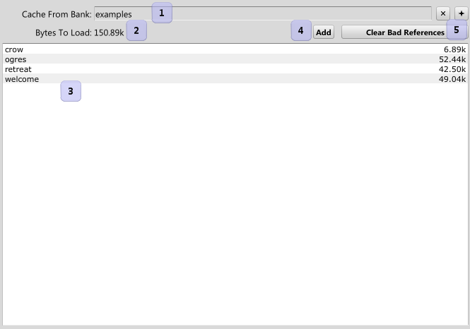

|
Cache/Purge Sounds |
| Navigation |
Cache and Purge Sounds load and unload sounds from memory, for use in Start Sound events.

It's important to note that the sounds will take a while to load, and it's generaly unpredictable which sound will be loaded first in the list. If you have a situation where you need to load a lot of sounds, but one in particular needs to be loaded first (say, for main menu music), you should make two cache sound event steps, and load the urgent sounds first.
 Comment Comment |
 Event Reference Event Reference |
 Enable Limits Enable Limits |

|
Miles Sound System 9.3b
E-mail miles3@radgametools.com for technical support. Copyright © 1991-2012 by RAD Game Tools, Inc. All Rights Reserved. |

|